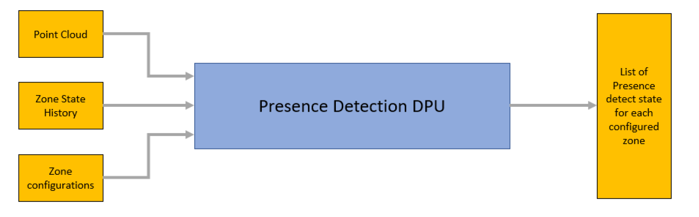
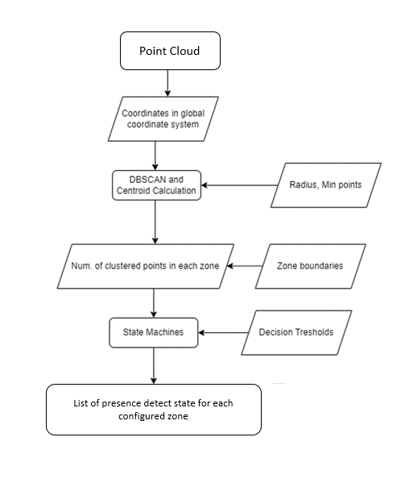

Introduction
The Motion and presence detect or MPD DPU is a higher level processing layer which detects motion and presence state in a defined region of interest, based on the input point cloud.
Block Diagram
The top-level block diagram of the DPU is shown in the figure below.

MPD DPU top-level diagram
MPD DPU Functioning
The MPD DPU processing flow is shown below.

MPD DPU processing flow
This DPU performs the following two major computations:-
- Clustering: of the input point cloud data based on the the user provided clusterCfg - CLI configuration. It has the following parameters:
- Cluster radius: The radius (in meters) of the neighborhood around a point (i.e., epsilon in DBSCAN algorithm). Note that the clustering takes the geometric difference between the detected point's range and the centroid's for a given cluster,
- minPoints: Minimum number of neighbor points required within the epsilon radius around the point under test, to constitute a cluster
- State machine: Each cluster is then mapped to the corresponding zones or boundary boxes of interest, based on the dimensions from CLI configuration - mpdBoundaryBox. Also, the state machine considers the history across a given n frames, to update the zone's state. This is user configurable through the CLI command - majorStateParam or minorStateParam. The output of this DPU is an 8-bit unsigned integer array, whose 0th index indicates the number of zones processed. The subsequent indices are split into 2-bit values for every zone(one for major motion and other for minor motion detection) and the maximum array index is computed as (num_of_zones*2-bits_per_zone)/8-bits_per_array_index
Usage Overview
API
The Presence Detection (mpdproc) DPU APIs are listed below. In the presence detect OOB chain, these mpdproc DPU APIs are exercised only if the DPU processing flag (isMotionPresenceDpuEnabled) is enabled.
- DPU_MpdProc_init(): This function allocates memory for the DPU instance and initializes it to zero.
- DPU_MpdProc_config(): Based on the configuration parameters, this function configures the DPU parameters to be able to perform clustering and presence detection computations for each configured zone. The function is normally called one time before the sensor start command is issued to the RF. In the low power deep sleep mode, the function is called per frame.
DPU_MpdProc_process(): This function is called per frame after the CFAR DPU is completed. It is called only once, irrespective of the motion modes – major/minor/auto and internally handles the processing for these modes accordingly. The input argument to the function is
- pointer to the DPU instance/handle, which in-turn consists of pointer(s) to the point cloud output(s) of CFAR DPU
The output arguments to the function are
- pointer to the output presence detect information per zone. The function performs the following steps:
- clustering of the point cloud to group/map them to the configured zones by calling function assignPointsToZones()
- performs the processing to determine the presence detected state of each zone, by running the state machine function stateMachine().
- DPU_MpdProc_deinit(): It frees the resources used for the DPU.
Example Usage
Include the below file to access the APIs
DPU Initialization Example
if (mpdProcDpuHandle == NULL)
{
DebugP_log (
"Debug: MPD Proc DPU initialization returned error %d\n", errorCode);
return;
}
DPU Configuration Parsing Example
pHwConfig = &mpdProcDpuCfg.res;
params = &mpdProcDpuCfg.staticCfg;
pHwConfig->zones = gMmwMssMCB.dpcZones;
if (!gMmwMssMCB.oneTimeConfigDone)
{
memset((
void *)pHwConfig->zones, 0, (gMmwMssMCB.sceneryParams.numBoundaryBoxes *
sizeof(
mpdProc_MotionTracker)));
for(i = 0;i < gMmwMssMCB.sceneryParams.numBoundaryBoxes;i++)
{
pHwConfig->zones[i].pointHistBufferMajor.bufferSize = gMmwMssMCB.majorStateParamCfg.histBufferSize;
pHwConfig->zones[i].pointHistBufferMajor.oldest = gMmwMssMCB.majorStateParamCfg.histBufferSize - 1;
pHwConfig->zones[i].snrHistBufferMajor.bufferSize = gMmwMssMCB.majorStateParamCfg.histBufferSize;
pHwConfig->zones[i].snrHistBufferMajor.oldest = gMmwMssMCB.majorStateParamCfg.histBufferSize - 1;
pHwConfig->zones[i].pointHistBufferMinor.bufferSize = gMmwMssMCB.minorStateParamCfg.histBufferSize;
pHwConfig->zones[i].pointHistBufferMinor.oldest = gMmwMssMCB.minorStateParamCfg.histBufferSize - 1;
pHwConfig->zones[i].snrHistBufferMinor.bufferSize = gMmwMssMCB.minorStateParamCfg.histBufferSize;
pHwConfig->zones[i].snrHistBufferMinor.oldest = gMmwMssMCB.minorStateParamCfg.histBufferSize - 1;
}
}
pHwConfig->numDetMajor = (uint16_t *)&gMmwMssMCB.dpcResult.numObjOutMajor;
pHwConfig->numDetMinor = (uint16_t *)&gMmwMssMCB.dpcResult.numObjOutMinor;
pHwConfig->detObjMajor = (DPIF_PointCloudCartesianExt *)&gMmwMssMCB.cfarDetObjOut[0];
pHwConfig->detObjMinor = (DPIF_PointCloudCartesianExt *)&gMmwMssMCB.cfarDetObjOut[0];
params->motionMode = (uint8_t)gMmwMssMCB.sigProcChainCfg.motDetMode;
DPU Configuration Example
if (retVal < 0)
{
DebugP_log(
"DEBUG: MPD DPU config return error:%d \n", retVal);
}
DPU Process Trigger Example
if(retVal != 0){
DebugP_log(
"DEBUG: DPU_MpdProc_process failed with error code %d", retVal);
}
DPU Close Example
if(retVal < 0)
{
DebugP_log(
"MPDProc DPU deinit error %d\n", retVal);
}
 1.8.20
1.8.20